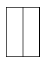
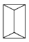
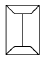
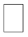

건축설비산업기사 (2004-09-05 기출문제)
1과목: 건축일반
1. 연약지반에서 부동침하를 방지하는 대책으로 틀린 것은?
- 건물의 길이를 너무 길지 않게 할 것
- 지하실을 강성체로 설치할 것
- 이웃건물과의 거리를 가깝게 할 것
- 건물의 중량을 평균화할 것
(정답률: 알수없음)

2. 다음 중 조적조에서 통줄눈을 피하는 이유와 가장 관계가 먼 것은?
- 통줄눈을 사용할 경우 상부하중을 하부로 균등히 분산시키기가 어렵다.
- 통줄눈을 사용할 경우 벽체의 균열이 발생하기 쉽다.
- 통줄눈을 사용할 경우 외관상 보기가 나쁘다.
- 통줄눈을 사용할 경우 지중의 습기가 스며들기 쉽다.
(정답률: 80%)
3. 철근콘크리트 연속보에 대한 설명으로 옳지 않은 것은?
- 단부 상부근의 철근량이 부족할 때는 상부 직선근을 덧대어 보강할 때도 있다.
- 2개 이상의 간사이에 일체로 연결된 보이고, 단부상태는 단순지지로 될 때도 있다.
- 보는 하중을 받으면 각 지점 부근에서는 위로 휘어오르고 중앙 하부에서는 아래로 휘어내린 상태로 된다.
- 휘어내린 부분과 휘어오른 부분은 전단력이 크게 작용하므로 이에 대응하기 위해 보의 주근인 단부 상부근과 중앙 하부근을 설치한다.
(정답률: 16%)
4. 철근콘크리트보의 철근 배치에 대한 설명 중 옳지 않은 것은?
- 보의 주근은 D13 이상으로 한다.
- 주근 배치는 특별한 때를 제외하고 2단 이하로 한다.
- 중요한 보는 압축측에도 철근 배근을 하여 복근으로 한다.
- 주근의 수평배근간격은 1.5cm 이상 또한 주근 공칭지름의 2.5배 이상으로 한다.
(정답률: 알수없음)
5. 철근콘크리트보의 철근피복두께에 관한 기술 중 옳지 않은 것은?
- 화재시에 철근의 가열에 의한 구조체의 파괴를 방지한다.
- 외기의 습기에 의한 철근의 부식을 방지한다.
- 일반적으로 옥외의 공기나 흙에 직접 접하지 않는 현장치기 콘크리트일 경우 최소피복두께는 40mm로 한다
- 경량콘크리트는 보통콘크리트보다 피복두께를 작게 한다.
(정답률: 64%)
6. 다음 중 차가운 외기의 유입 및 실내 온기의 유출을 방지하면서 사람의 출입을 원활히 조절하는데 가장 효과적인 문은?
- 회전문
- 접문
- 미서기문
- 여닫이문
(정답률: 91%)
7. 일반주택의 거실계획에 관한 설명 중 잘못된 것은?
- 통로로서 사용되는 평면배치는 피하도록 한다.
- 정원과 유기적으로 시각적 연결을 하도록 한다.
- 리빙 키친은 거실과 부엌을 분리한 형태로 대규모 주택에 적합하다.
- 일반적으로 1인당 최소한 4~6m2 정도가 적당하다.
(정답률: 알수없음)
8. 에스컬레이터 배치방식 중 승객의 시계가 좁지만 연속적으로 승강할 수 있으며 점유면적이 적은 방식은?
- 직렬식 배치
- 병렬 단속식 배치
- 교차식 배치
- 병렬 연속식 배치
(정답률: 알수없음)
9. 상점계획에 관한 설명 중 옳지 않은 것은?
- 종업원과 고객의 동선은 분리되지 않아야 한다.
- 종업원의 동선은 짧게, 고객의 동선은 길게 한다.
- 상점의 총면적이란 일반적으로 건축면적 가운데 영업을 목적으로 사용되는 면적을 말한다.
- 상품 이동 동선은 반입, 보관, 포장, 발송과 같은 작업때문에 필요한 공간이다.
(정답률: 알수없음)
10. 도서관계획에 대한 설명으로 옳지 않은 것은?
- 열람실은 채광이 좋고 조용하며 서고에 멀리 떨어진 곳에 배치시킨다.
- 도서관의 신축시에는 대지선정과 배치단계에서부터 장래의 성장에 따른 증축 가능한 공간을 확보할 필요가 있다.
- 서고의 수장능력 기준은 능률적인 작업용량으로서 서고공간 1m3당 약 66권 정도이다.
- 서고 내에 있는 서가는 정리, 수납에 중점을 두지만, 열람실의 서가는 도서의 선택 및 열람의 용이성에 중점을 둔다.
(정답률: 93%)
11. 시티호텔의 종류가 아닌 것은?
- 아파트먼트 호텔(Apartment Hotel)
- 클럽 하우스(Club House)
- 레지덴셜 호텔(Residential Hotel)
- 커머셜 호텔 (Commercial Hotel)
(정답률: 77%)
12. 병원건축의 형식 중 분관식이 집중식보다 유리한 점에 해당되는 것은?
- 각 병실마다 고르게 일조를 얻을 수 있다.
- 설비의 배관길이가 짧게 된다.
- 관리가 편하고 동선이 짧게 된다.
- 대지가 협소해도 가능하다.
(정답률: 77%)
13. 조적조 내력벽에 관한 설명 중 옳지 않은 것은?
- 벽돌 내력벽의 두께는 벽높이의 1/30이상으로 한다.
- 내력벽의 길이는 10m를 넘지 않도록 한다.
- 내력벽으로 둘러싸인 부분의 바닥면적은 80m2를 넘을 수 없다.
- 내력벽의 두께는 바로 윗층의 내력벽의 두께 이상 이어야 한다.
(정답률: 39%)
14. 여닫이문에 사용하는 철물이 아닌 것은?
- 레일
- 플로어 힌지
- 도어 체크
- 실린더 자물쇠
(정답률: 알수없음)
15. 다음의 지붕 평면도 중 모임지붕은?




(정답률: 94%)
16. 주택의 화장실 및 욕실 계획에 대한 설명으로 가장 부적당한 것은?
- 세면기의 높이는 70~75cm 정도로 하는 것이 좋다.
- 거실과 침실에서 멀지 않아야 좋다.
- 욕실의 천장은 약간 경사지는 것이 좋다.
- 욕실의 문은 욕실 바깥 여닫이로 해야 좋다.
(정답률: 70%)
17. 사무소 건축계획에 관한 다음 설명 중 틀린 것은?
- 코어의 급탕실, 잡용실은 가능한 근접시킨다.
- 최상층은 2중천장으로 해서는 않되며 기준층의 층고보다 낮게 계획한다.
- 코어는 각 층마다 공통의 위치로 계획한다.
- 엘리베이터는 규모가 큰 건물의 경우에도 되도록 1개소에 집중해서 배치하는 것이 바람직하다.
(정답률: 알수없음)
18. 학교의 운영방식 중 초등학교 저학년에 적합한 형태로 학급수와 교실수가 일치하고 각 학급은 스스로의 교실안에서 모든 교과를 행하는 것은?
- 종합교실형
- 달톤형
- 교과교실형
- 플래툰형
(정답률: 알수없음)
19. 벽돌벽 등에 장식적으로 구멍을 내어 쌓는 벽돌쌓기법은?
- 영롱쌓기
- 엇모쌓기
- 불식쌓기
- 영식쌓기
(정답률: 알수없음)
20. 철근콘크리트 구조의 장점에 대한 설명 중 옳지 않은 것은?
- 내구성이 크다.
- 철골구조에 비하여 시공이 간단하며 공기가 짧다.
- 부재의 형상과 치수가 자유롭다.
- 내진 및 내풍성이 우수하다.
(정답률: 알수없음)
2과목: 위생설비
21. 수세식 변소용수로 사용하기 위한 중수도 처리 수질 기준 항목 중 잘못된 것은?
- 대장균군수: 검출되지 아니할 것
- BOD: 5 mg/L 이하
- 탁도: 2 NTU 이하
- pH: 5.8 ~ 8.5
(정답률: 알수없음)
22. 하루 7시간을 급탕하는 4인 가족 주택에서의 시간당 최대 급탕량은? (단, 1인 1일당 급탕량 = 140L, 1일 사용량에 대해 필요한 1시간당 최대치의 비율 = 1/7, 최대급탕량 계속시간 =4시간)
- 80 L/h
- 560 L/h
- 35 L/h
- 140 L/h
(정답률: 알수없음)
23. 연소에 필요한 산소의 공급을 차단하여 연소를 정지시키는 방법은?
- 희석방법
- 질식방법
- 냉각방법
- 억제방법
(정답률: 알수없음)
24. 트랩의 유효봉수깊이는 일반적으로 50∼100mm이다. 봉수의 깊이가 100mm를 넘으면 어떠한 일이 발생하는가?
- 통수능력이 감소되며 그에 따라 자정작용이 없어지게 된다.
- 봉수가 쉽게 파괴된다.
- 사이펀 현상이 커지게 된다.
- 급탕의 온도저하를 막을 수 없게 된다.
(정답률: 알수없음)
25. 정화조 중 유입된 오수를 혐기성균에 의하여 소화 작용으로 분리 침전이 이루어 지도록 하는 곳은?
- 부패조
- 여과조
- 산화조
- 소독조
(정답률: 58%)
26. 건물내의 급수방식에 관한 기술 중 옳은 것은?
- 압력수조방식은 급수공급압력의 변화가 거의 없다.
- 고가수조방식은 대규모의 급수 수요에 대응하기 어려우며 단수시에 급수를 할 수 없다.
- 고가수조방식은 저수시간이 길어지면 수질이 나빠지기 쉽다.
- 수도직결식 급수방식은 중고층 건물의 급수방법이다.
(정답률: 59%)
27. 다음의 LPG 및 LNG에 대한 설명이 옳은 것은?
- LPG는 프로판이 주성분인 액화천연가스를 말한다.
- LNG는 석유의 탄화수소가스 중 용이하게 액화하기 쉬운 탄화수소가스의 혼합물로 구성되어 있다.
- LPG의 비중은 공기의 비중보다 커서 누설되었을때 하부에 체류하기 쉽다.
- LNG는 석유정제과정에서 얻어진다.
(정답률: 62%)
28. 다음 중 기구급수 부하단위가 가장 큰 것은?
- 세면기
- 세정밸브식 소변기
- 욕조
- 세정밸브식 대변기
(정답률: 90%)
29. 스프링클러 설비에 대한 설명으로 옳지 않은 것은?
- 고층건축물, 지하층, 무창층 등 소방차의 진입이 곤란한 곳에 설치한다.
- 화재의 초기진화에는 부적당하다.
- 한랭지나 동결의 염려가 있는 곳에는 건식을 사용하는 것이 좋다.
- 일반적으로 사용되고 있는 것은 스프링클러 헤드의 가융금속이 화재로 용융하여 방수하는 패쇄형이다.
(정답률: 알수없음)
30. 다음 중 배수관의 관경에 대한 설명으로 옳지 않은 것은?
- 배수관은 배수의 유하방향으로 관경을 축소하도록 한다.
- 기구배수관의 관경은 이것에 접속하는 위생기구의 트랩구경 이상으로 한다.
- 배수관의 최소관경은 30A로 한다.
- 배수수직관의 관경은 이것에 접속하는 배수수평지관의 최대관경 이상으로 한다.
(정답률: 34%)
31. 급탕관경이 50A이고 관길이가 200m이며, 반탕관 길이가 190m일 때의 순환펌프의 양정은 얼마인가? (단, 관로의 마찰손실수두를 급탕관에서는 5mmAq/m, 반탕관에서는 10mmAq/m로 가정한다.)
- 2.6m
- 2.7m
- 2.8m
- 2.9m
(정답률: 알수없음)
32. 펌프의 양수량이 3,000雜/min이고, 펌프의 효율은 75%, 전양정은 20m일 때의 펌프축동력은?
- 10kW
- 11kW
- 12kW
- 13kW
(정답률: 70%)
33. 급탕관과 반탕관의 관경으로 적당치 않은 것은?(단, 단위 ㎜)
- 급탕 20, 반탕 15
- 급탕 40, 반탕 25
- 급탕 50, 반탕 32
- 급탕 80, 반탕 40
(정답률: 알수없음)
34. 배관재료의 사용에 따른 연결 중 옳지 않은 것은?
- 동관 - 급탕배관
- 연관 - 굴곡이 많은 수도 인입관 및 기기 연결관
- 주철관 - 난방배관
- 강관 - 증기배관
(정답률: 알수없음)
35. 간접배수방식으로 배수하지 않아도 되는 것은?
- 세면기
- 냉장고
- 세탁기
- 소독기
(정답률: 63%)
36. 다음 중 건물의 급수량 산정과 관계가 가장 먼 것은?
- 건물의 유효면적
- 급수 대상 인원
- 설치된 위생기구수
- 건물의 층고
(정답률: 알수없음)
37. 도기질 위생 기구의 장점이 아닌 것은?
- 강도가 커서 내구력이 있다.
- 금속으로 된 접속물과 연결이 용이하다.
- 산, 알칼리에 침식되지 않는다.
- 오수, 악취를 흡수하지 않는다.
(정답률: 알수없음)
38. 수도 본관에서 6m의 높이에 있는 샤워기에 급수하는데 필요한 수도본관내의 최저압력은? (단, 배관내의 마찰손실수두는 3mAq로 한다.)
- 0.6㎏/㎝2
- 0.9㎏/㎝2
- 1.6㎏/㎝2
- 1.9㎏/㎝2
(정답률: 알수없음)
39. 다음 배관부속 중 관의 말단을 막을 때 사용하는 것은?
- 부싱
- 니플
- 플러그
- 엘보우
(정답률: 70%)
40. 다음 중 배수 설비에서 트랩의 가장 주된 역할은?
- 배수관내의 악취나 가스가 실내로 유입되는 것을 방지한다
- 급수관내 급수흐름을 원활히 한다.
- 배수관내의 유속을 조정한다.
- 유도사이폰작용에 의한 봉수파괴를 방지한다.
(정답률: 75%)
3과목: 공기조화설비
41. 전공기 방식의 특징을 기술한 내용 중 옳지 않은 것은?
- 외기냉방이 가능하다.
- 환기효과가 크다.
- 겨울철의 가습에 불리하다.
- 전수방식에 비하여 운송동력이 크다.
(정답률: 알수없음)
42. 공기여과기용 에어필터를 선정할 시의 고려사항으로서 가장 부적당한 것은?
- 적용분진 입자경
- 압력손실
- 필터의 중량
- 분진포집 효율
(정답률: 84%)
43. 흡수냉동기에서 H2O-LiBr을 동작물질로 사용할 때 냉매는?
- H2O
- LiBr
- H2O-LiBr
- CF3
(정답률: 70%)
44. 공기조화 방식의 분류 중에서 공기· 수 방식이 아닌것은?
- 팬코일 유닛방식
- 단일덕트 재열방식
- 유인 유닛방식
- 덕트병용 팬코일 유닛방식
(정답률: 31%)
45. 펌프의 특성 중 비교회전수가 가장 적은 펌프는?
- 터빈펌프
- 볼류트펌프
- 사류펌프
- 축류펌프
(정답률: 알수없음)
46. 에어와셔의 입구공기온도 15℃, 습구온도 9℃, 출구공기 온도 10℃일때 단열가습시의 포화효율은 얼마인가?
- 56%
- 67%
- 83%
- 90%
(정답률: 25%)
47. 대용량의 냉동기에 적합한 압축기 형식은?
- 원심식
- 로타리식
- 스크류식
- 왕복동식
(정답률: 알수없음)
48. 주방, 화장실 등과 같이 냄새 또는 유해가스나 증기발생이 많은 공간에 적합한 환기방식은?
- 강제급기 + 강제배기
- 강제급기 + 배기구
- 급기구 + 강제배기
- 자연환기
(정답률: 80%)
49. 다음 중 천장용 흡입구가 아닌 것은?
- 라인형 흡입구
- 라이트 트로퍼형 흡입구
- 아네모형 흡입구
- 머쉬룸형 흡입구
(정답률: 알수없음)
50. 난방시에 외기량이 500㎏/h일 때 외기에 의한 현열부하 qs(㎉/h)는 ? (단, 외기의 건구온도는 5℃, 절대습도는 0.002 ㎏/㎏′ 이며, 실내공기는 건구온도 24℃, 절대습도는 0.009㎏/㎏′ 이다.)
- qs = 2,280 ㎉/h
- qs = 2,855 ㎉/h
- qs = 3,264 ㎉/h
- qs = 4,327 ㎉/h
(정답률: 알수없음)
51. 대향류형 냉각탑이 직교류형 냉각탑에 비해 유리한 것으로 옳은 것은?
- 열교환효율
- 살수장치의 보수점검
- 급수압력
- 송풍기동력
(정답률: 알수없음)
52. 실내 취득현열량이 44,000kcal/h, 잠열량이 9,000kcal/h 일 때 실내의 온도를 26℃로 유지하려면 실내에 공급하여야 할 풍량은 얼마인가?(단, 공기의 비열은 0.24kcal/kg℃, 공기의 비중량은 1.2kg/m3이고 실내에 공급되는 공기의 온도는 12℃이다.)
- 2,217 m3/h
- 10,345 m3/h
- 10,913 m3/h
- 11,345 m3/h
(정답률: 알수없음)
53. 기간부하를 산정하기 위한 방법이 아닌 것은?
- 빈 방법(bin method)
- 디그리데이(degree day)
- 동적 열부하 계산법
- 최대 열부하 계산법
(정답률: 알수없음)
54. 필요 환기량을 결정하는 조건을 나열한 것 중 옳은 것은?
- 실의 위치, 실의 종류, 내· 외기 조건, 재실자의 수
- 실내발생 유해물질, 실의 종류, 내· 외기조건, 재실 자의 수
- 실의 방향, 실의 위치, 내· 외기 조건, 재실자의 수
- 실의 방향, 실내발생 유해물질, 실의 종류, 재실자의 수
(정답률: 30%)
55. 배관회로 방식을 설명한 것으로 옳은 것은?
- 건식환수방식 - 보일러 기준수면 보다 낮은 위치에 환수주관을 설치하는 방식
- 역환수방식 - 균일한 유량조절을 위한 밸브 필요
- 밀폐회로 방식 - 배관부식이 심하여 백가스관 사용
- 직접환수식 - 배관 스페이스가 적으나 유량의 균등한 배분이 어려운 방식
(정답률: 알수없음)
56. 관내공기를 제거하는 방법으로 옳지 않은 것은?
- 물의 흐름방향으로 앞올림 구배로 한다.
- 방열기 출구에 리턴 콕을 설치한다.
- 배관의 최정상부에 공기 배출밸브를 설치한다.
- 팽창수조에 연결되는 공기 배출관을 설치한다.
(정답률: 알수없음)
57. 덕트에 관한 다음 기술 중 부적당한 것은?
- 고속덕트방식은 소음과 진동이 문제시 된다.
- 가변풍량방식은 송풍기 동력을 줄일 수 있다.
- 유인유닛방식은 저속덕트를 이용한다.
- 저속덕트방식은 고속덕트방식에 비해 송풍동력이 적게 소요된다.
(정답률: 30%)
58. 공기조화를 하는 건축물의 출입구로부터 침입하는 틈새 바람의 영향을 감소시키기 위한 가장 유효한 방법은?
- 계절풍의 풍향에 면하지 않게 출입구를 설치한다.
- 출입구에 자동개폐의 이중문을 설치한다.
- 출입구에 회전문을 사용한다.
- 출입구에 바람막이를 설치한다.
(정답률: 60%)
59. 공기조화란 인공적으로 실내공기의 온도, 습도, 기류와 ( )의 4가지 요소를 인체 혹은 물품에 가장 적합한 상태로 유지시켜 주는 것이다. ( )속에 들어갈 단어로 옳은 것은?
- 열수지
- 음향
- 청정도
- 진동
(정답률: 80%)
60. 표준대기압 상태에서 펌프로 물을 흡상할 경우 유효흡입 양정이 가장 작은 경우는?
- 5℃의 물
- 10.3℃의 물
- 50℃의 온수
- 80℃의 온수
(정답률: 알수없음)
4과목: 건축설비관계법규
61. 10세대가 거주하는 다세대 주택의 급수관의 최소지름은?
- 25㎜
- 30㎜
- 35㎜
- 40㎜
(정답률: 알수없음)
62. 주요구조부가 내화구조 또는 불연재료가 아닌 건축물에 설치하는 방화벽에 관한 기준으로 부적합한 것은?
- 내화구조로서 홀로 설 수 있는 구조일 것
- 방화벽에 설치하는 출입문은 갑종방화문 또는 을종 방화문으로 할 것
- 방화벽에 설치하는 출입문의 너비 및 높이는 각각 2.5m 이하로 할 것
- 방화벽의 양쪽 끝과 윗쪽 끝을 건축물의 외벽면 및 지붕면으로부터 0.5m 이상 튀어나오게 할 것
(정답률: 40%)
63. 동일한 사업장에서 배출되는 오수· 분뇨 및 축산폐수의 배출량이 폐수배출량의 몇 %미만이어야 오수· 분뇨 또는 축산폐수를 수질환경보전법에 의한 수질오염방지시설에서 병합처리할 수 있는가?
- 15%
- 30%
- 50%
- 75%
(정답률: 알수없음)
64. 건축물에 설치하는 배수용 배관설비의 설치 및 구조기준에 적합하지 않은 것은?
- 배수트랩· 통기관을 설치하는 등 위생에 지장이 없도록 할 것
- 오수에 접하는 부분은 방수재료를 사용할 것
- 우수관과 오수관은 분리하여 배관할 것
- 콘크리트구조체에 배관을 매설하거나 배관이 콘크리트구조체를 관통할 경우에는 구조체에 덧관을 미리 매설하는 등 배관의 부식을 방지하고 그 수선 및 교체가 용이하도록 할 것
(정답률: 알수없음)
65. 오수분뇨축산폐수의처리에 관한 법률에 의한 분뇨처리시설의 방류수 수질기준 중 생물화학적 산소요구량(B.O.D) 기준으로 맞는 것은?
- 20mg/ℓ 이하
- 30mg/ℓ 이하
- 40mg/ℓ 이하
- 50mg/ℓ 이하
(정답률: 알수없음)
66. 다음 중 거실의 용도에 따른 조도기준이 다른 하나는?
- 독서
- 일반사무
- 제조
- 회의
(정답률: 알수없음)
67. 건축물에 설치하는 음용수용 배관설비의 설치 및 구조의 기준으로 옳지 않은 것은?
- 다른 용도의 배관설비와 직접 연결하지 아니할 것
- 승강기의 승강로안에는 승강기의 운행에 필요한 배관 설비외의 배관설비를 설치할 것
- 급수관 및 수도계량기는 얼어서 깨지지 아니하도록 설치할 것
- 음용수의 급수관의 지름은 건축물의 용도 및 규모에 적정한 규격 이상으로 할 것
(정답률: 알수없음)
68. 시장· 군수· 구청장이 도시계획시설 또는 도시계획시설예 정지에 건축을 허가할 수 있는 가설건축물의 기준으로 옳지 아니한 것은?
- 3층 이하일 것
- 존치기간은 3년 이내일 것
- 조적조 또는 철근콘크리트조가 아닐 것
- 전기· 수도· 가스 등 새로운 간선공급설비의 설치를 요하지 아니할 것
(정답률: 10%)
69. 다음 중 방화구조로 적합하지 않은 것은?
- 두께 2.5㎝이상의 암면보온판위에 석면시멘트판을 붙인 것
- 심벽에 흙으로 맞벽치기한 것
- 두께 1.2㎝이상의 석고판위에 석면시멘트판을 붙인 것
- 시멘트모르타르 위에 타일을 붙인것으로서 그 두께의 합계가 2㎝이상인 것
(정답률: 알수없음)
70. 다음 중 오수처리시설의 오수정화방법이 아닌 것은?
- 토양침투처리방법
- 물리· 화학적 방법
- 호기성 생물학적 방법
- 혐기성 생물학적 방법
(정답률: 59%)
71. 다음중 오수처리시설의 설치· 변경신고시 필요한 서류에 해당되지 않는 것은?
- 건물등의 배수계통도
- 건축물대장의 사본
- 오수처리시설의 설계도서
- 건물등의 단면도
(정답률: 알수없음)
72. 일반적으로 연면적이 얼마 이상인 건축물의 경우 건축허가등을 함에 있어서 미리 소방본부장 또는 소방서장의 동의를 받아야 하는가?
- 400제곱미터
- 500제곱미터
- 600제곱미터
- 700제곱미터
(정답률: 알수없음)
73. 다음 헬리포트의 설치기준 중 틀린 것은?
- 헬리포트의 길이와 너비는 각각 20m 이상으로 할 것
- 헬리포트의 주위한계선은 백색으로 할 것
- 헬리포트의 주위한계선의 너비는 38㎝ 로 할 것
- 헬리포트의 중심으로부터 반경 12m 이내에는 이· 착륙에 장애가 되는 건축물· 공작물 또는 난간 등을 설치하지 아니할 것
(정답률: 55%)
74. 지하 1층, 지상 10층인 교육연구 및 복지시설로 각층 거실 면적이 공히 1,000m2인 경우의 승용승강기 대수는?
- 8인승 1대
- 15인승 2대
- 8인승 3대
- 15인승 4대
(정답률: 알수없음)
75. 문화집회 및 운동시설로서 무대부의 바닥면적이 몇m2 이상이면 제연설비를 설치하여야 하는가?
- 100m2
- 120m2
- 150m2
- 200m2
(정답률: 알수없음)
76. 건축물의 피난층 또는 피난층의 승강장으로부터 건축물의 바깥쪽에 이르는 통로에 경사로를 설치하여야 할 판매 및 영업시설의 최소 연면적은?
- 2,000m2
- 3,000m2
- 5,000m2
- 6,000m2
(정답률: 25%)
77. 건축물에 설치하는 지하층의 구조 및 설비기준에 의하면 거실바닥면적의 합계가 얼마 이상인 층에 환기설비를 설치하여야 하는가?
- 500m2 이상
- 1,000m2 이상
- 1,500m2 이상
- 2,000m2 이상
(정답률: 알수없음)
78. 의료시설의 병실의 환기를 위하여 거실에 설치하는 창문 등의 면적은 그 거실의 바닥면적의 얼마 이상이어야 하는 가?
- 1/10 이상
- 1/20 이상
- 1/30 이상
- 1/50 이상
(정답률: 64%)
79. 특정소방대상물 중 어린이회관은 어느 시설에 해당하는가?
- 관광휴게시설
- 노유자시설
- 청소년시설
- 교육연구시설
(정답률: 0%)
80. 다음 중 소화활동설비에 해당되지 않는 것은?
- 비상콘센트설비
- 스크링클러설비
- 무선통신보조설비
- 연소방지설비
(정답률: 알수없음)